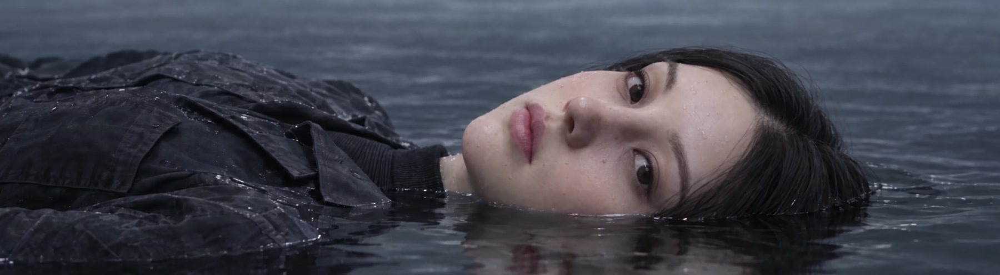
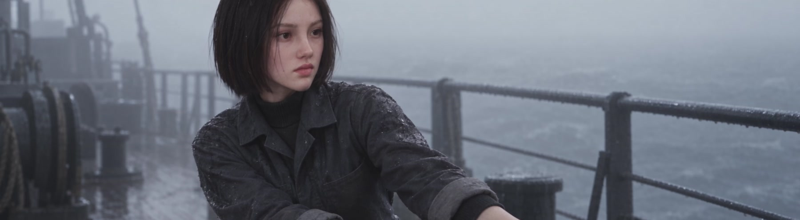
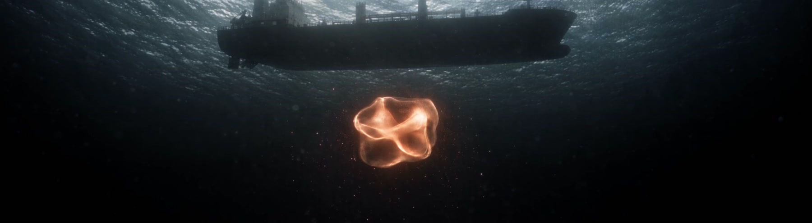
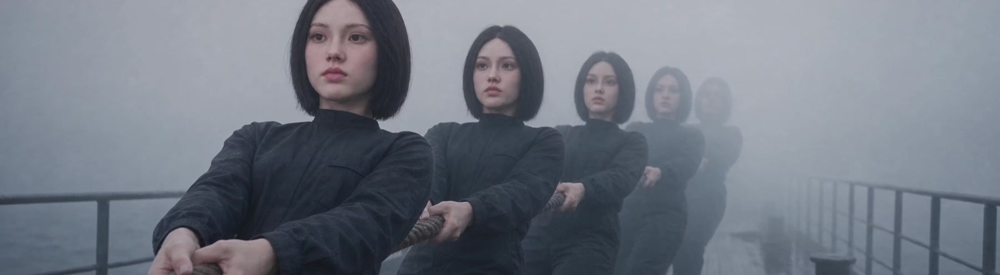
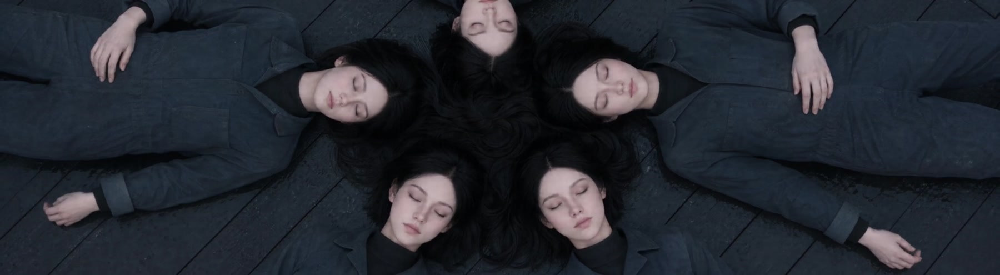

In the Same Boat
On a boat in fog, five women with the same face tend to ropes, water, and the hull. A warm light appears beneath the surface, interrupting their separate routines. The film asks how figures divided into different roles might recognise and respond to one another.






Work details
- Year
- 2026
- Duration
- 1 min 55 sec
- Medium
- Single-channel video, colour, sound
- Process
- AI image and video generation using MetaHuman character references; editing and sound design by the artist.
- Exhibition
- Seoullo Media Canvas 2026 — Emerging Artists Support Exhibition
Selected artist · Seoullo Media Canvas, Seoul
–